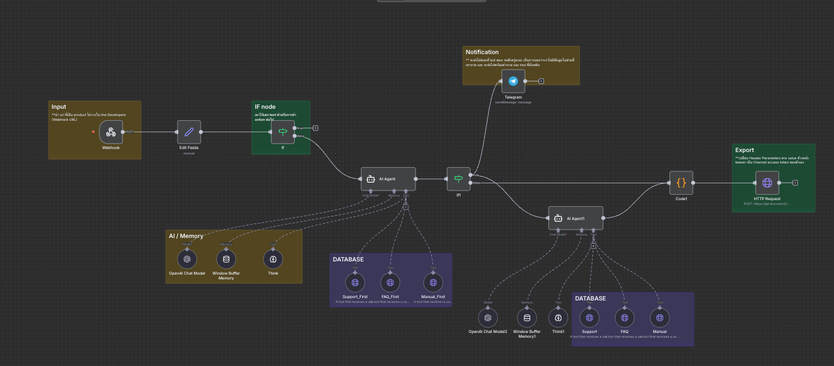

LINE chatbot: from customer question to support handoff
During my internship, I built a chatbot workflow to handle recurring customer questions on LINE. It connected incoming messages with AI prompts and business information, with alerts for questions that needed human support.
The problem
Recurring inquiries meant repeated manual replies. Questions the chatbot could not resolve still needed to reach a member of the support team.
My role
I built the n8n workflows, structured the AI prompts, connected webhooks and Google Sheets, and added a notification path for human support.

Open full-size workflow imageHow a question moves through the system
A simplified walkthrough of the workflow above.
Receive the message
A customer sends a question on LINE. A webhook brings the message into n8n for processing.
Prepare an answer
The workflow uses AI prompts and connected data sources to handle the question. AI agents, memory, and database tools are visible in the diagram.
Return a response
The response path processes the output and sends it through an HTTP request.
When the question needs a person
A separate notification path alerts human support when the chatbot cannot resolve an inquiry. The workflow image shows this branch leading to a Telegram notification node.
What I delivered
A LINE chatbot workflow combining AI prompts, data connections, and support notifications. It covered both recurring questions and a route to human support.